Selamat Datang
Bantenara
Website
Terbangkan Imajinasi Anda di Bantenara: Destinasi Impian Menanti!
Jelajahi SekarangSuku Baduy
Atraksi Debus

Ujung Kulon
Budaya Banten
Debus
pertunjukan seni yang menampilkan kekebalan tubuh terhadap berbagai macam benturan dan sengatan. Pertunjukan Debus ini menjadi bukti kekuatan mental dan fisik orang Banten.
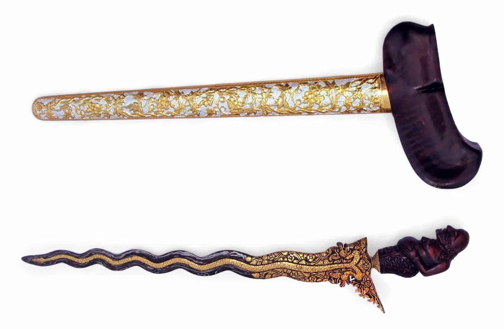
Senjata Tradisional
Banten dikenal dengan berbagai macam senjata tradisional seperti keris, golok, dan badik. Senjata-senjata ini menjadi simbol keberanian dan kekuatan orang Banten.
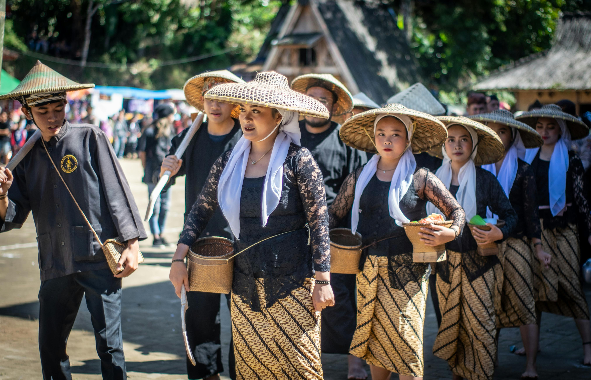
Suku Baduy
suku asli Banten. Mereka masih menjaga tradisi dan anti modernisasi, baik dari cara berpakaian maupun pola hidup. Suku Baduy tinggal di kawasan cagar budaya Pegunungan Kendeng seluas 5.101,85 hektar di Kanekes, Kecamatan Leuwidamar, Kabupaten Lebak. Umumnya, perkampungan masyarakat terletak di area Sungai Ciujung di Pegunungan Kendeng.
Pariwisata Banten

Arum Jeram
Banten

Benteng Speelwijk
Banten

Telaga Biru Cisoka
Banten

Pulau Tunda
Banten
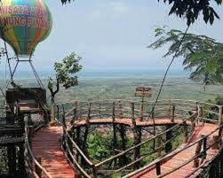
Puncak pinang
Banten

Pantai Carita
Banten
Kuliner Banten
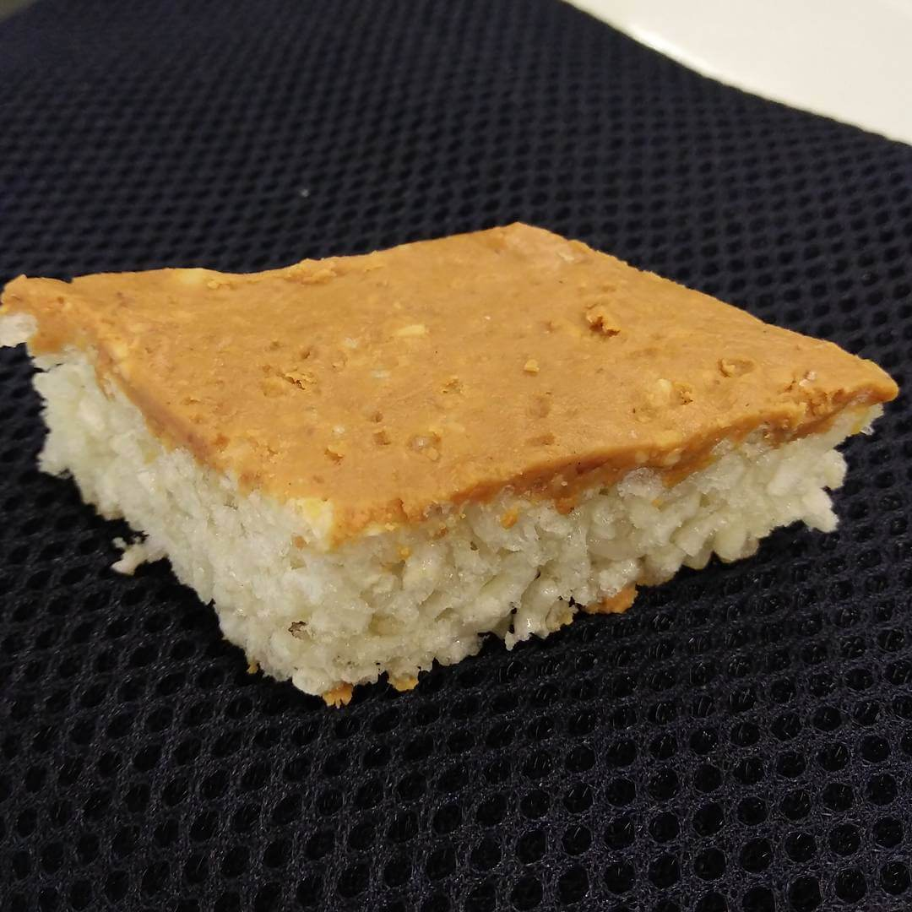
Gipang
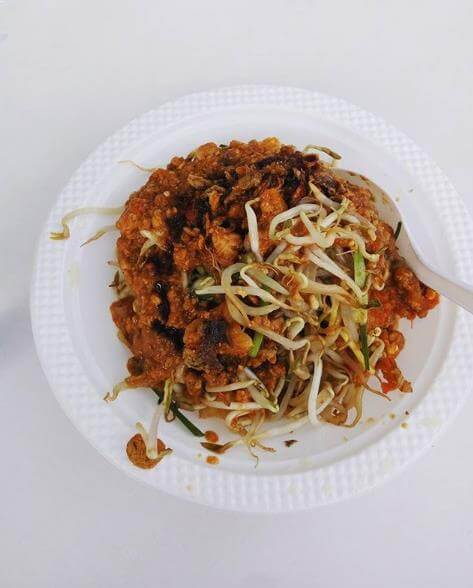
Gecom
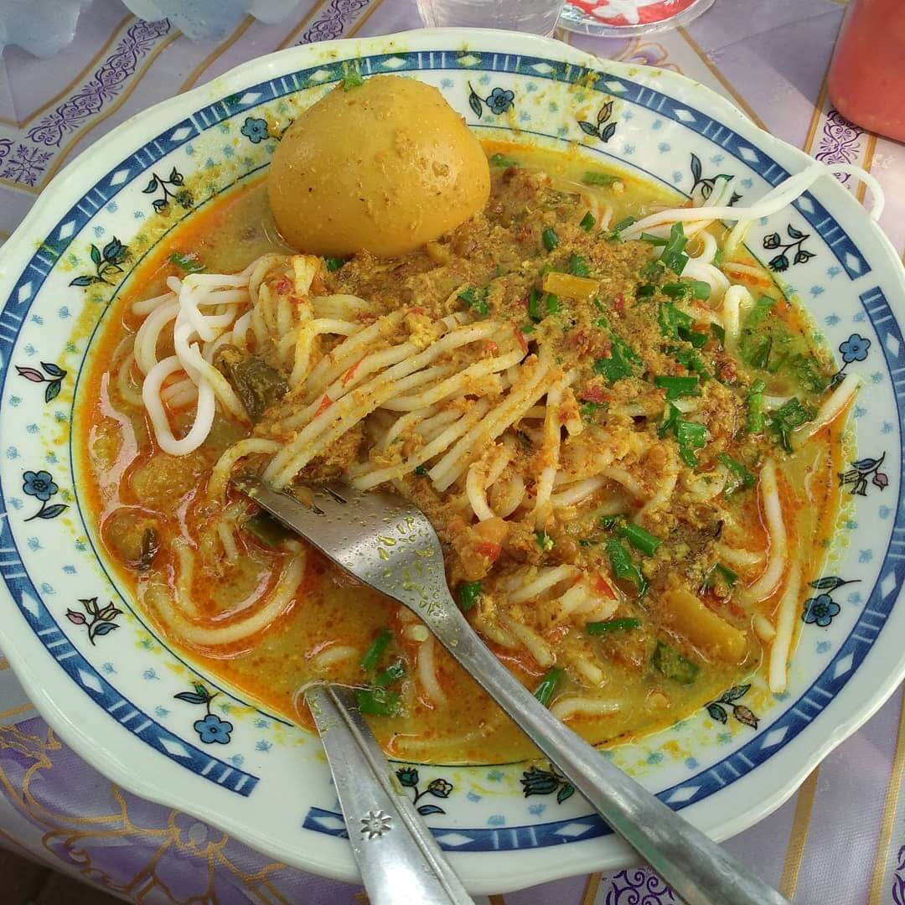
laksa
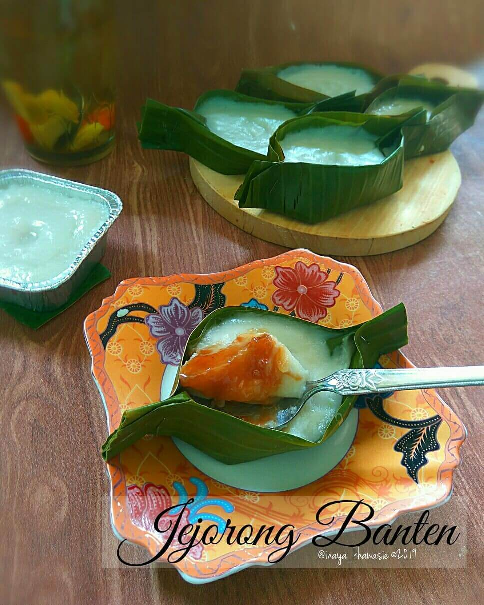
kue jojorong
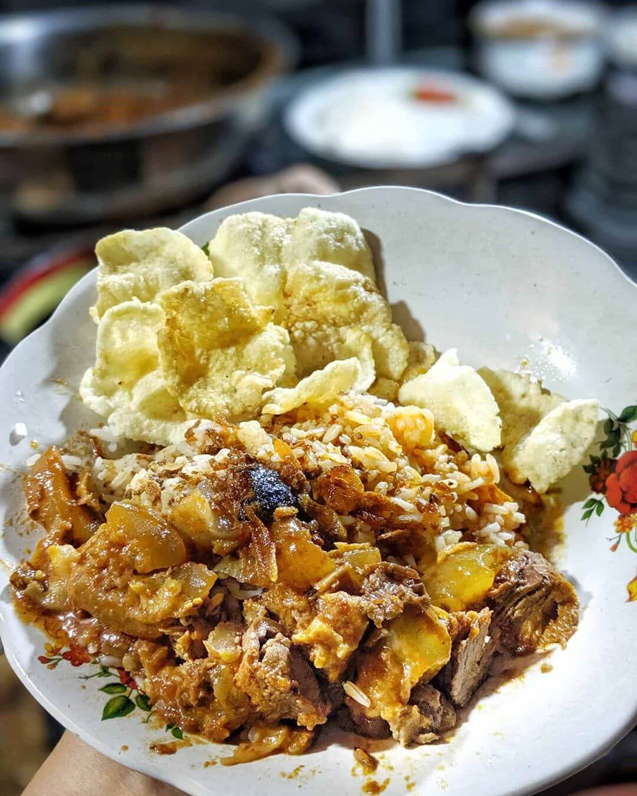
Nasi Uduk Serang

Soto Banten
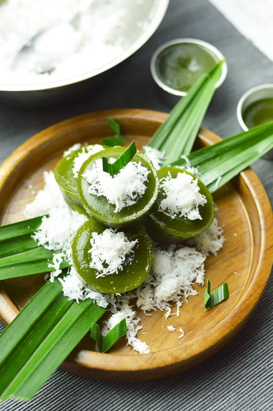
Kue Lumpur

Pecak Bandeng
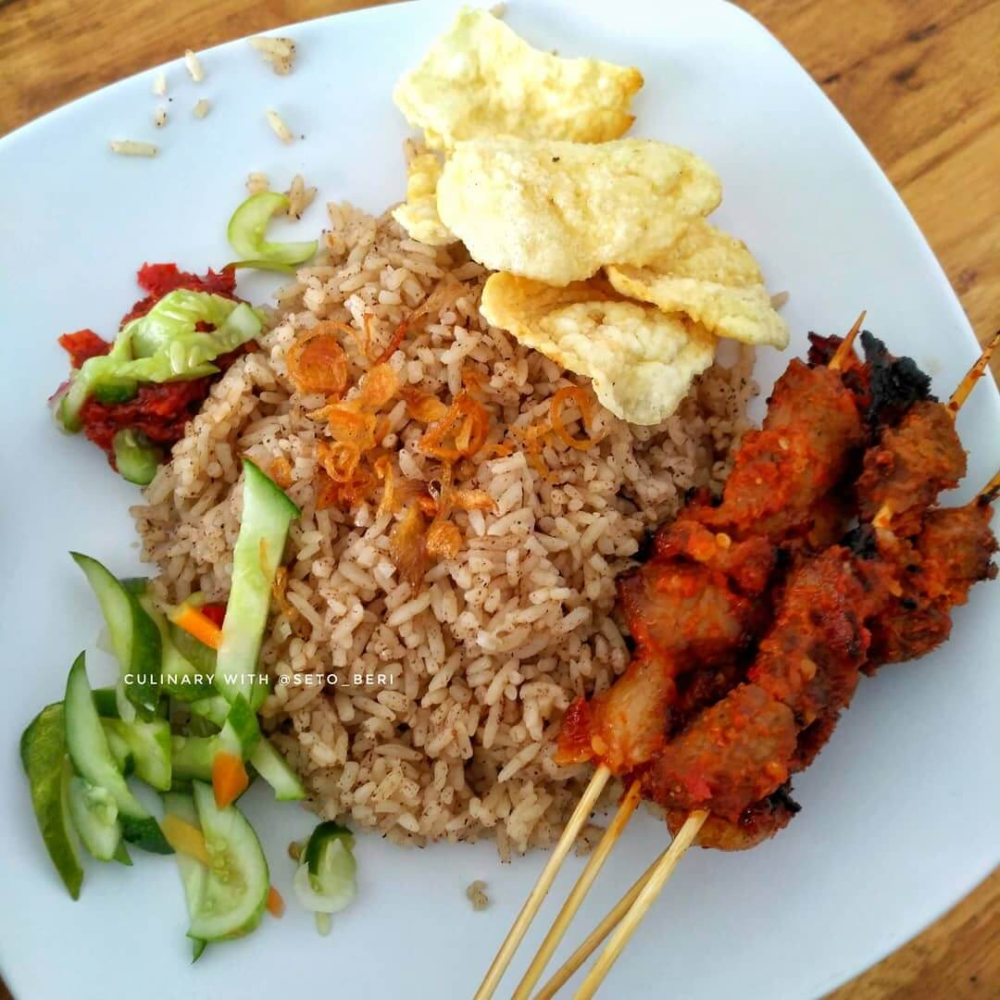
Nasi gonjleng

Pecak Bandeng
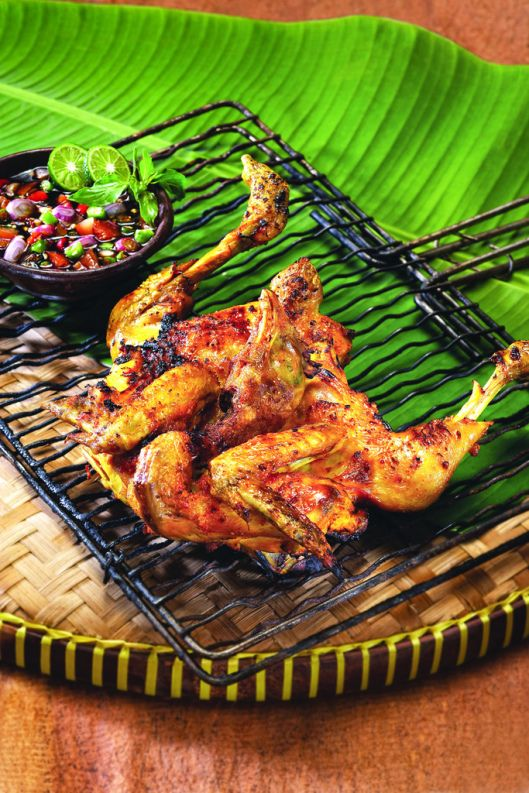
Ayam bakar
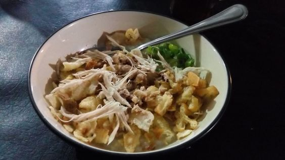
Bubur Ayam
Support
Selalu support Budaya, pariwisata dan Kulinernya Banten